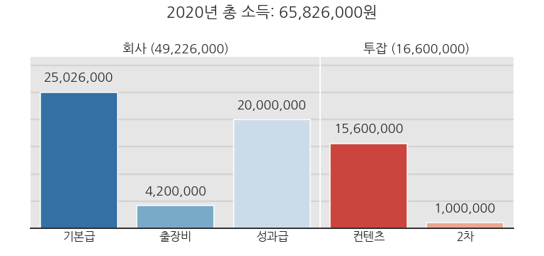

- 수입이 불규칙한 영업사원을 가정하고, 은행계좌를 간단하게 분석합니다.
- 데이터프레임의 문자열 일부를 이용해 데이터를 분류합니다.
- 분석을 위한 데이터도 직접 만들어봅니다.
1. 입금 데이터
- 급여통장을 지정하고 모든 수입을 통일하면 창구는 일원화됩니다.
- 그러나 통장에 찍히는 급여내역이 그다지 친절하지 않으면 정리가 어렵습니다.
- 투잡을 하는 영업사원 A씨의 통장에 찍힌 연간 수입을 정리합시다.
- 인터넷 뱅킹을 통해 거래내역을 조회할 수 있습니다.
- 날짜별 용도(적요)에 따른 입금액을 분석합니다.
1.1. 입금 내역 데이터를 읽어옵니다.
- 사용된 데이터를 여기서 다운받을 수 있습니다.
- 진짜 데이터가 아닌, 임의로 만든 데이터입니다.
1
2
3
4
5import numpy as np
import pandas as pd
y2020 = pd.read_excel("57_income.xlsx")
y2020.head(20)
- 여러 입금내역이 섞여있습니다.
- 성과급, 컨텐츠, 결제환급, 카드, 출장, 이런 내용이 있습니다.
- A씨는 영업사원으로 근무하는 동시에 퇴근 후와 주말을 이용해 컨텐츠를 제작합니다.
- 본업인 회사, 그리고 투잡인 컨텐츠 제작과 관계된 내역만을 골라내봅니다.
- 회사에서는 세 가지 수입이 있습니다.
- 기본급 : 매달 200만원. 달마다 약간의 변동이 있습니다.
- 출장비 : 일비 3만원, 그리고 장소 이동 1건당 교통비 3만원.
- 성과급 : 계약 성사시 건당 1천만원입니다.
- 투잡에서는 두 가지 수입이 있습니다.
- 컨텐츠 제작비 : 컨텐츠 회사와 건당 10만원의 계약을 했습니다.
출장이 없는 날의 60% 가량을 투자합니다. - 2차 창작비 : 드물지만 컨텐츠가 2차 창작됩니다.
1% 확률로 출판 계약, 저작권료 등으로 건당 100만원을 받습니다.
- 컨텐츠 제작비 : 컨텐츠 회사와 건당 10만원의 계약을 했습니다.
- 그리고 제외해야 하는 사적 입금액이 있습니다.
- 카드 결제 취소액이 입금되기도 하고
- 가족으로부터 자녀에게 오는 용돈이 있습니다.
1.2. 총 입금액 확인
- 총 입금액을 확인합니다.
- 카드 환불금, 자녀에게 줄 돈이 섞여있는 금액입니다.
1
y2020["입금액"].sum()
- 실행 결과:
1
76418000
- 실행 결과:
- 총 7천6백4십만원 가량입니다만 읽기 힘듭니다.
- 읽기 좋게 천 단위로 쉼표를 찍습니다.
format(데이터, ",")를 사용하면 쉽게 가능합니다.1
format(y2020["입금액"].sum(), ",")
- 실행 결과:
1
'76,418,000'
- 실행 결과:
1.3. 소득 확인
- 일을 해서 얻은 소득만 확인합니다.
- “적요”에서 기본급, 출장비, 성과급, 컨텐츠, 2차 창작비를 추출합니다.
- 기본급 : ‘우리회사’ 뒤에 숫자가 붙어 입금됩니다.
- 출장비 : ‘출장’ 뒤에 숫자가 붙어 입금됩니다.
- 성과급 : 건당 ‘성과급’으로 입금됩니다.
- 컨텐츠 제작비 : 회사 이름인 ‘OO컨텐츠’로 입금됩니다.
- 2차 창작물 : ‘출판 계약금’, ‘저작권료’등으로 입금됩니다.
- 숫자를 제외하고 공통으로 포함된 단어만 사용해서 추출합니다.
- 근로소득만 담은 데이터프레임을 y2020_company로 저장합니다.
pd.Series.str.contains("문자열")을 사용합니다.regex=True로 정규식을 사용할 수 있습니다.1
2
3y2020_company = y2020.loc[y2020["적요"].str.contains("우리회사|출장|성과급|컨텐츠|출판|출연|저작권", regex=True)]
y2020_company["입금액"] = y2020_company["입금액"].astype(int)
y2020_company.head()
- 총 근로소득을 확인해봅니다.
1
format(y2020_company["입금액"].sum(), ",")
- 실행 결과:
1
'65,826,000'
- 실행 결과:
1.3.1. 소득원별 소득
- 같은 명령을 사용해서 소득원별 index를 추출합니다.
1
2
3
4
5
6
7
8
9
10
11
12
13
14
15
16### 1. 회사
# 기본급
index_salary = y2020_company.loc[y2020_company["적요"].str.contains("우리회사", regex=False)].index
# 출장비
index_biztrip = y2020_company.loc[y2020_company["적요"].str.contains("출장", regex=False)].index
# 성과급
index_success = y2020_company.loc[y2020_company["적요"].str.contains("성과급", regex=False)].index
### 2. 투잡
# 컨텐츠 제작비
index_contents = y2020_company.loc[y2020_company["적요"].str.contains("컨텐츠", regex=False)].index
# 2차 창작물
index_2nd = y2020_company.loc[y2020_company["적요"].str.contains("출판|출연|저작권", regex=True)].index
- 그리고 ‘type’이라는 컬럼을 새로 만들어 정리합니다.
groupby로 정렬하기 위해서입니다.1
2
3
4
5
6
7
8y2020_company["type"] = np.nan
y2020_company.loc[index_salary, "type"] = "기본급"
y2020_company.loc[index_biztrip, "type"] = "출장비"
y2020_company.loc[index_success, "type"] = "성과급"
y2020_company.loc[index_contents, "type"] = "컨텐츠"
y2020_company.loc[index_2nd, "type"] = "2차"
1.3.2. 시각화
- 소득원별 소득을 보기 좋게 그림으로 표현합니다.
- 한글 사용을 설정하고, seaborn의 힘을 빌립니다.
1
2
3
4
5
6
7import matplotlib.pyplot as plt
import seaborn as sns
plt.rcParams['font.family']='NanumGothic'
plt.rcParams['axes.unicode_minus'] = False
sns.set_style("white")
sns.set_context("talk")
plt.subplots()에gridspec_kw를 사용하면 비대칭 subplot을 만들기 편리합니다.1
2
3
4
5
6
7
8
9
10
11
12
13
14
15
16
17
18
19
20
21
22
23
24
25
26
27
28
29
30
31
32
33
34
35fig, axs = plt.subplots(ncols=2, figsize=(10, 5), gridspec_kw={"width_ratios":[3,2], "wspace":0}, sharey=True)
def plot_income(df, idx, ax, palette="tab10", title=None):
sns.barplot(x=idx, y="입금액", data=df.loc[idx], palette=palette, ax=ax, zorder=2)
ax.set_xlabel(None)
ax.set_ylabel(None)
yticks = ax.get_yticks()
ax.set_yticks(yticks)
ax.set_yticklabels([])
ax.set_facecolor("0.9")
[ax.spines[k].set_visible(False) for k in ["left", "top", "right"]]
ax.tick_params(axis="both", length=0)
[ax.axhline(y, zorder=1, c="lightgray") for y in yticks];
for i, p in enumerate(ax.patches):
h = p.get_height()
ax.text(i, h+2e6, format(int(h), ","), ha="center")
ax.set_title(f"{title} ({format(int(df.loc[idx].sum()), ',')})")
return ax
idx_company = ["기본급", "출장비", "성과급"]
idx_2job = ["컨텐츠", "2차"]
axs[0] = plot_income(y2020_g, idx_company, axs[0], palette="Blues_r", title="회사")
axs[1] = plot_income(y2020_g, idx_2job, axs[1], palette="Reds_r", title="투잡")
axs[1].spines["left"].set_visible(True)
axs[1].spines["left"].set_color("w")
fig.suptitle(f"2020년 총 소득: {format(int(y2020_g.sum()), ',')}원")
fig.tight_layout()
1.4. 결론
- 숫자들의 나열인 통장 입금내역을 간단하게 정리했습니다.
pandas.DataFrame또는pandas.Series명령은 데이터를 정리하기 좋습니다.- matplotlib, seaborn을 함께 사용하면 한눈에 수익원별 수입 비율을 그릴 수 있었습니다.
- 다음 글에서는 가상의 데이터를 만든 방법을 나누어 보겠습니다.